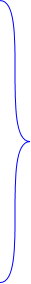

语法复杂

既要记符号、又要记位置
但却只有1个符号a
0x1000
[1,2,3]
0x1000
2v1 不可能一一对应，这注定是不可调和的事实

物理上存在2个对象(一个指针+一段数据)
a


语义混乱
不知道符号a究竟代表啥意思
int a = 10; // a 本身就是值
int* p = &a; // *在左边，表示定义p是int类型的指针; &取地址
printf("%d\n", *p); // 输出10 ，*在右边，表示解引用
与乘法* 、逻辑与&&、位运算& .....混在一起，再搭配函数调用、多级指针......源码非常复杂
无解
C++引用
a是 int类型的引用
某种极度抽象的概念，外层是个抽象的引用，然后内层包了个具体的对象
访问时会跳转至目标对象，但却无法触及底层指针
—— windows快捷方式 好歹本身是个可独立操控的文件，C++引用底层的指针直接不让你碰
JavaScript、Java、Python.....值类型/引用类型
赋值语义不统一
其他语言试图绕过指针，却又引入了新问题；拆东墙补西墙，就看你能接受哪边了
与类型系统强耦合
不强制转型成char*，就无法进行“步长=1”的指针运算